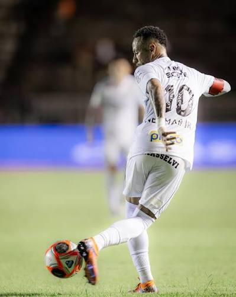

Neymar da Silva Santos Júnior nasceu em 5 de fevereiro de 1992 em Mogi das Cruzes, São Paulo. É considerado um dos maiores jogadores de futebol da atualidade.
Começou no Santos FC, brilhou no Barcelona com Messi e Suárez, jogou no PSG e atualmente defende o Al-Hilal.
